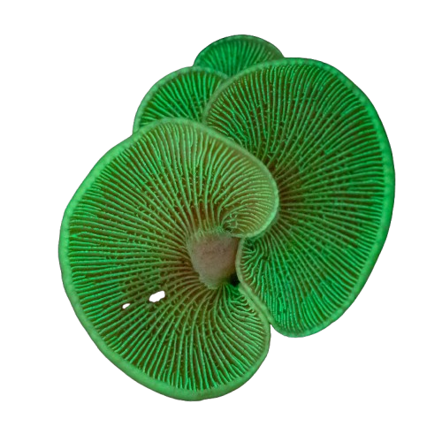
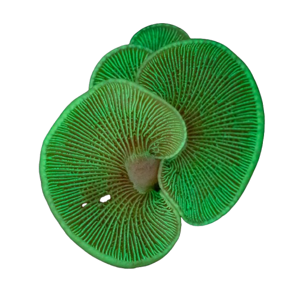

Panellus Stipticus

 

Descripción:
Panellus stipticus, conocido coloquialmente como "hongo amargo" o "hongo luminiscente", es una especie de hongo basidiomiceto perteneciente a la familia Mycenaceae. Este pequeño pero fascinante hongo, que rara vez supera los 3 cm de diámetro, es reconocible por su sombrero en forma de abanico, de color marrón amarillento y textura coriácea. Sin embargo, su característica más sorprendente es su capacidad de emitir un resplandor verde fantasmagórico en la oscuridad, un fenómeno conocido como bioluminiscencia.
La bioluminiscencia de Panellus stipticus se debe a una reacción química entre la luciferina (un pigmento) y la enzima luciferasa, similar al mecanismo que utilizan las luciérnagas. Este brillo, visible principalmente en condiciones de alta humedad, se cree que atrae a insectos nocturnos para ayudar en la dispersión de sus esporas. Curiosamente, solo algunas cepas de esta especie (especialmente las de Norteamérica) son luminiscentes, mientras que las variedades europeas suelen carecer de esta propiedad.
Ecológicamente, Panellus stipticus es un descomponedor que crece en troncos muertos de árboles caducifolios, especialmente robles y hayas. Su papel en la descomposición de la madera es crucial para el reciclaje de nutrientes en los bosques. Aunque no es considerado tóxico, su sabor extremadamente amargo lo hace no comestible. En la medicina tradicional, algunas culturas lo han utilizado por sus supuestas propiedades astringentes y hemostáticas (para detener hemorragias).
Desde el punto de vista taxonómico, este hongo ha sido objeto de debate. Originalmente descrito como Agaricus stipticus en 1783, ha pasado por varios géneros hasta su clasificación actual en Panellus. Su nombre específico, "stipticus", hace referencia a su mencionada propiedad astringente (del griego styptikós, "que contrae"). A diferencia de otros hongos bioluminiscentes como Omphalotus olearius, Panellus stipticus no es venenoso, pero su textura fibrosa y su amargor lo hacen poco atractivo incluso para los más aventureros.
En la cultura popular, aunque menos icónico que la Amanita muscaria, este hongo ha aparecido en documentales sobre la biodiversidad de los bosques y en estudios científicos sobre bioluminiscencia. Su presencia en la noche transforma los troncos donde crece en "faros naturales", un espectáculo que ha inspirado a fotógrafos y artistas. Sin duda, Panellus stipticus demuestra que la naturaleza esconde maravillas incluso en los organismos más pequeños y discretos.